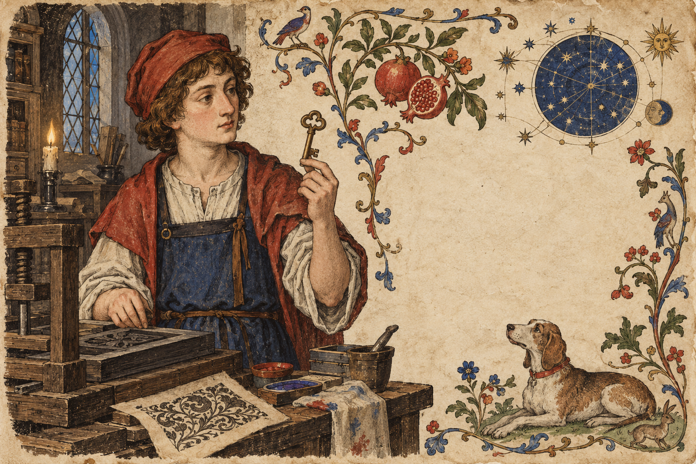

01 · relationship-map
STYLE SPECIMEN · Pentiment (2022)
The Waking Scriptorium
Editable primitives for early-print manuscript investigation ui; not a finished game screen.

02 · investigation-log
Evidence note
Evidence note
A clipped manuscript note with source, confidence, and a contradiction marker.
STATUS · RECORDED / FICTIONAL03 · dialogue-exchange
Voice choice
Voice choice
Two response lines with distinct rhetorical tones and a clear selected state.
No choice committed. Specimen state only.